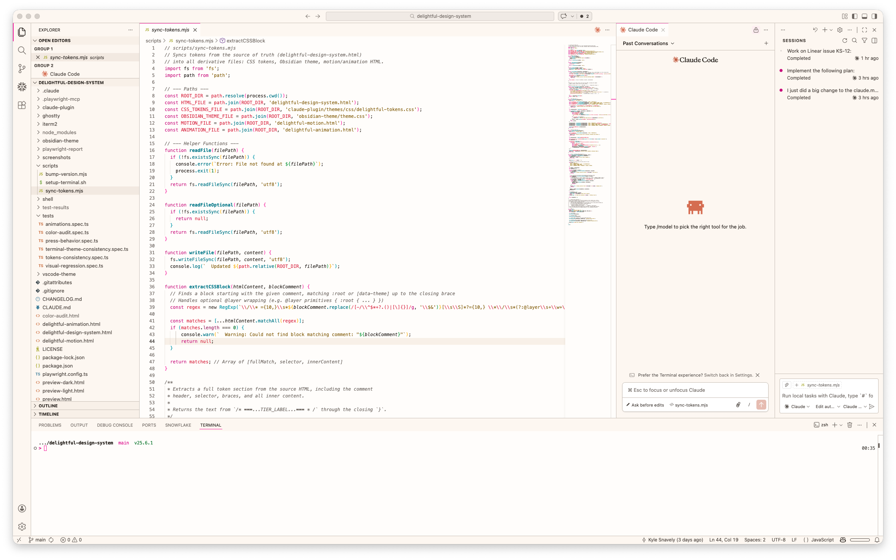

Reference Pages
The public docs are plain HTML: inspectable, portable, and close to the tokens they describe.
A system with fingerprints
Delightful uses warm neutrals, unapologetic borders, solid offset shadows, and bright-but-controlled accents. The goal is not generic polish. It is software that feels sturdy, expressive, and a little more alive.
Primitives
Semantic tokens
Component tokens
Light and dark
Reduced motion


Ecosystem
Each port is standalone so it can follow the platform it belongs to. This site stays the reference hub.
Claude CodeSkills, agents, MCP tools, and token context.
VS CodeMarketplace-ready light and dark color themes.
ObsidianCommunity theme with modular source CSS.
GhosttyTerminal themes, config, and optional shaders.
iTerm2Generated `.itermcolors` profiles.
StarshipRainbow powerline prompt with Delightful colors.
Shelltmux, zsh, auto-attach, and smart-open utilities.
SetupMachine setup orchestration for the full environment.